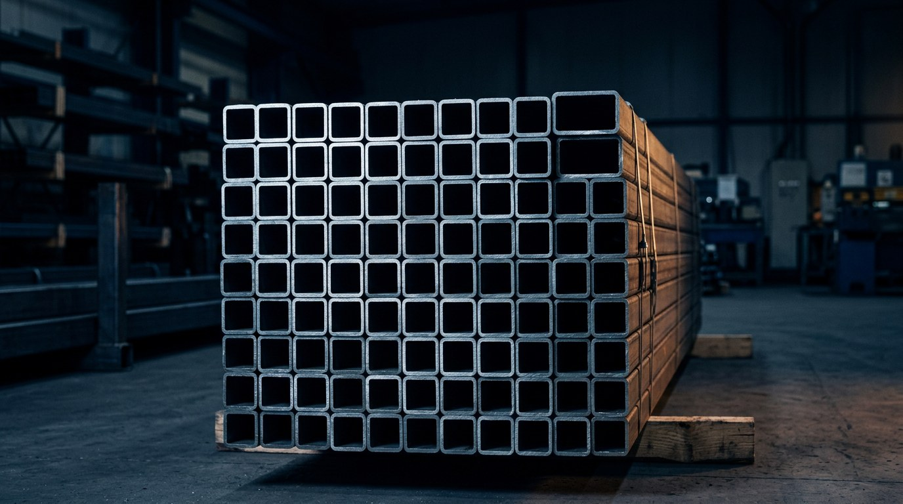
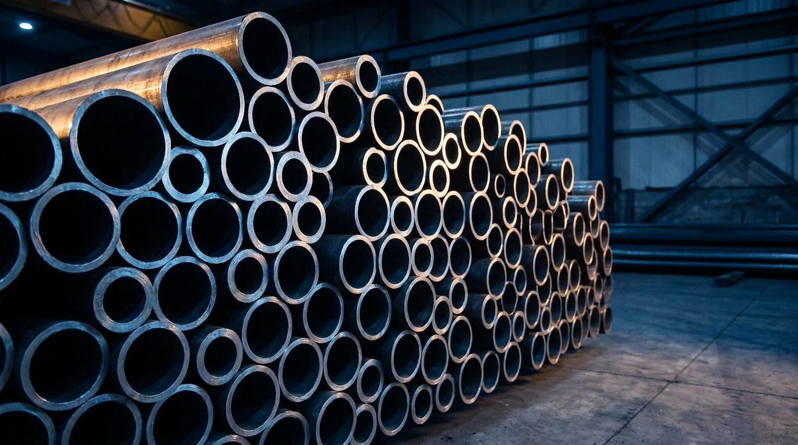
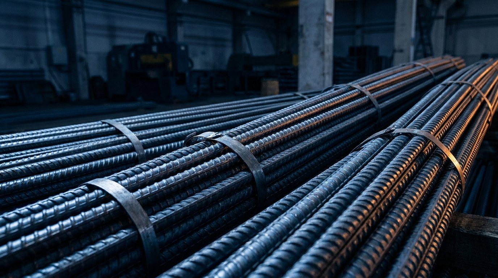
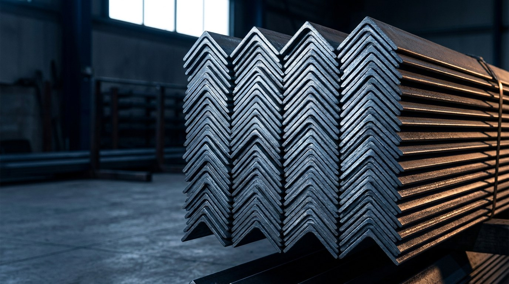
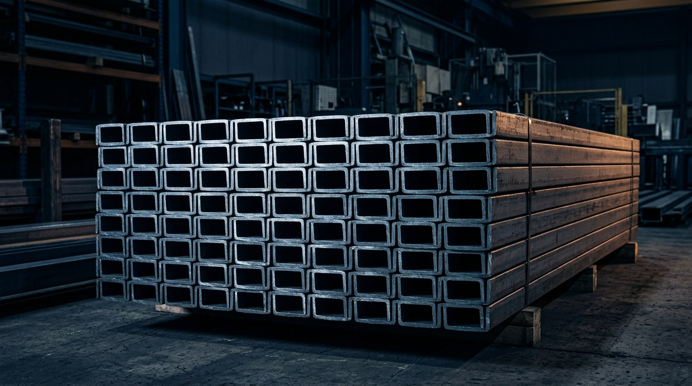
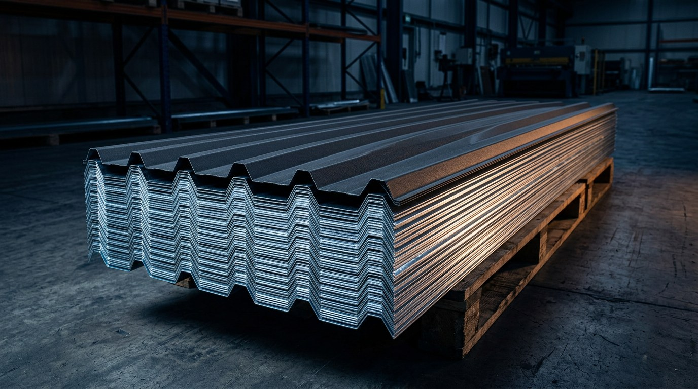
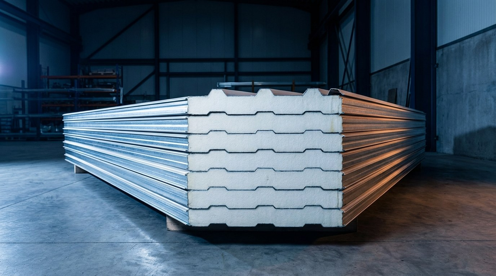
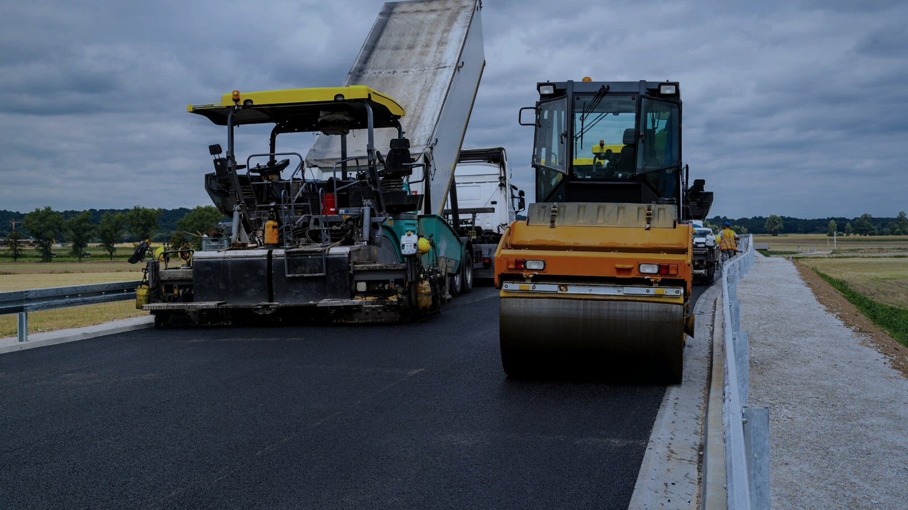

01
МЕТАЛЛОПРОКАТ
Профильные трубы
Квадратное и прямоугольное сечение
Подробнее
Девять групп продукции · ГОСТ сортамент · калькулятор тонн и метров








Сколько метров проката в тонне? Выберите позицию — калькулятор пересчитает вес в метры и обратно по теоретическому весу ГОСТ.
Отгрузка от одной единицы до оптовых партий под график стройки. Цены фиксируются в коммерческом предложении.
Комплектация объектов государственных заказчиков: документация, спецификации и поставка в требуемые сроки.
Отгрузка со складов в Ташкенте и Навоийской области, доставка на объект по согласованному графику.
Нестандартные типоразмеры и материалы под проект — по индивидуальной заявке.
Позвоните — назовём актуальные цены и зафиксируем их в коммерческом предложении
+998 99 731 77 57